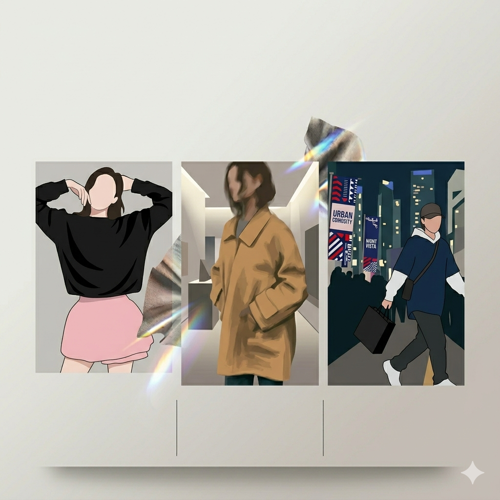

5년차 웹퍼블리셔 강서영입니다.
에이전시에서 다양한 구축 프로젝트를 수행하며 쇼핑몰, 관리자 시스템, 서비스 사이트 등 여러 유형의 화면 구조 작업을 경험했습니다.
현재는 관리자 시스템 구축과 패션 브랜드 기획전, 운영 및 유지보수 업무를 중심으로 실무를 이어가고 있습니다.
단순 구현보다 빠른 수정, 반복 운영, 안정적인 확장을 고려한 퍼블리싱을 지향합니다.
About me
Name
강서영
E-mail
dkasid@naver.com
Summary
구축부터 운영까지, 브랜드와 운영 흐름을 함께 이해하는 웹퍼블리셔
Skills
Skill
HTMLCSSJavaScriptjQueryReact
Platform
ShopifyCafe24
Growth
three.js웹접근성
Career
2021.07 - 2022.09 프래프 | 다양한 구축 프로젝트 퍼블리싱
2023.02 - 2023.09 아이오센트레 | 기업 사이트 및 앱 화면 퍼블리싱
2023.10 - Present 요일 | MLB 기획전 퍼블리싱, 브랜드 프로모션/유지보수 담당
프로젝트 페이지
Works
실무에서 수행한 주요 프로젝트를 유형별로 정리했습니다.
단순 결과물보다 역할, 기여 포인트, 운영 관점을 중심으로 구성했습니다.
Projects

Promotion
MLB 기획전 / 패션 브랜드 기획전
기획전 퍼블리싱 / 반응형 / 운영 대응
짧은 일정 안에서도 브랜드 무드와 디바이스 대응을 함께 고려해 작업한 기획전 퍼블리싱입니다.